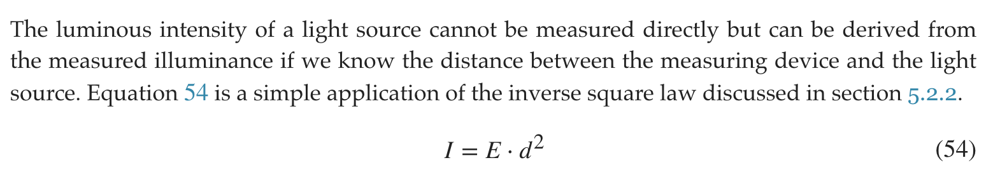
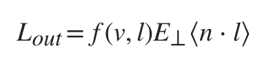
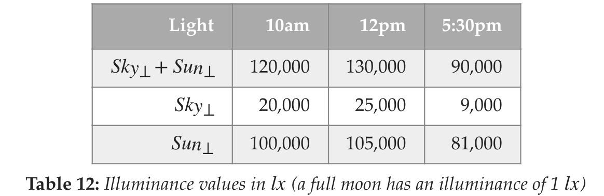
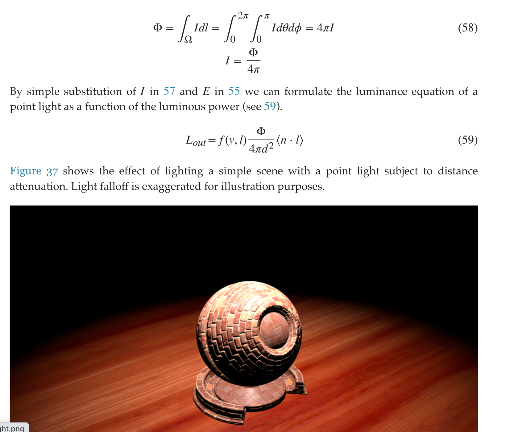
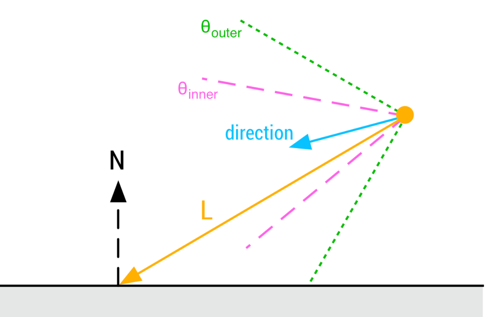
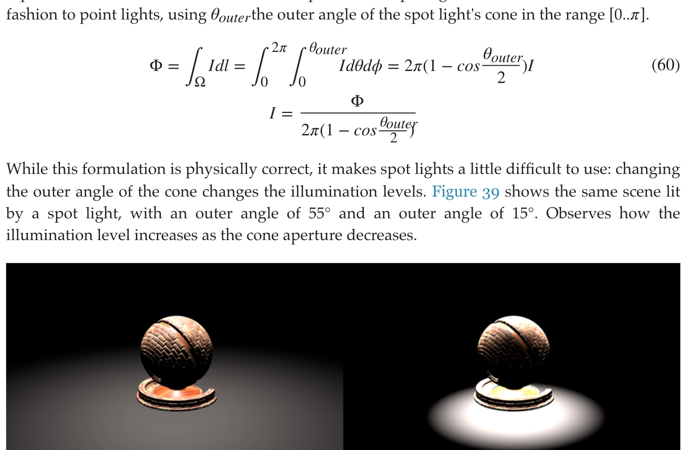
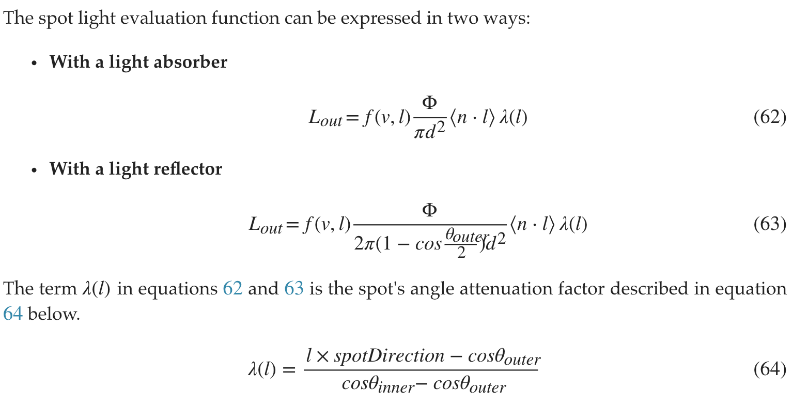
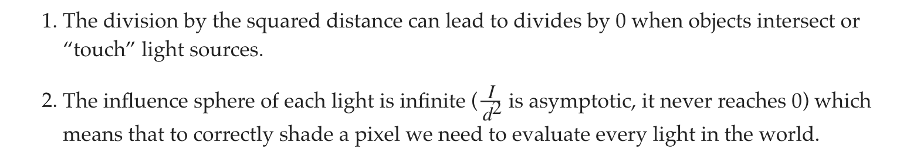
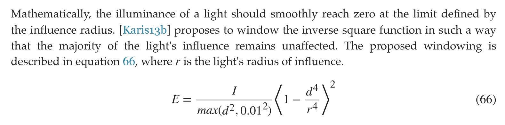

Filament Basic Physical Lighting
light units (统一度量衡)
{kind=link}
{kind=link}
- luminous intensity 和 illuminance 的转换关系 
{kind=link}
direct Lighting
directional light
- diffuse almost correct, but specular has artifacts 
{kind=link}
E⊥ is the illuminance of the light source for a surface perpendicular to said light source 
{kind=link}
punctual light
point light
球面积分的式子应该少了一项sin(theta)项 
{kind=link}
spot light
  但是为了方便artist调节参数，需要把outer angle和perceived illuminance解耦，近似成 但是也仅限于a matte, diffuse mask that absorbs light的材质才近似物理正确。 最终，spot light 的 render equation有如下形式： 
{kind=link}
{kind=link}
{kind=link}
{kind=link}
attenuation function
但其实point light和spot light并不遵循inverse square law attenuation.  
{kind=link}
{kind=link}
Photometric lights
如何给artist更大的自由去控制the distribution of light within the space. Photometric lights use a photometric profile to describe their luminous intensity distribution.
- IES (Illuminating Engineering Society)
- EULUMDAT (European Lumen Data format)
{kind=link}
{kind=link}
比punctual light多一项各个方向采样的intensity IES profile生成pass使用的a photometric profile as a texture的两种方式：
- Photometric profile as a mask
- Photometric profile
float multiplier;
// Photometric profile used as a mask
if (photometricLight.isMasked()) {
// The desired intensity is set by the artist
// The integrated intensity comes from a Monte-Carlo
// integration over the unit sphere around the luminaire
multiplier = photometricLight.getDesiredIntensity() /
photometricLight.getIntegratedIntensity();
} else {
// Multiplier provided for convenience, set to 1.0 by default
multiplier = photometricLight.getMultiplier();
}
// The max intensity in cd comes from the IES profile
float lightIntensity = photometricLight.getMaxIntensity() * multiplier;